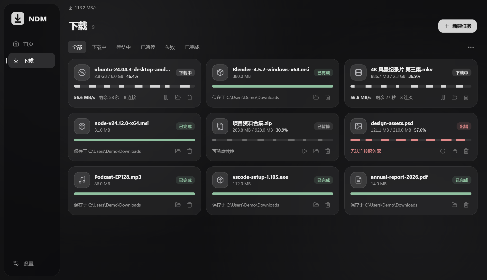

多连接加速、视频下载、磁力与 BT 种子，一个下载器就够了。支持 BTv2，接管浏览器下载，免费、开源、无广告。

很多服务器会限制单个连接的速度。NDM 把文件切成多段同时下载，先下完的连接会去帮剩余最多的那段。
示意演示（4 倍速播放）：假设服务器限制每个连接的速度，且各连接快慢不一。实际速度取决于服务器与网络。
先探测文件大小与是否支持断点续传，再切成多段，每段独占一条连接同时下载。
某个连接下完自己那段后，自动把剩余最多的分段一分为二接手，跑到最后也不掉速。
实测服务器响应延迟，预判即将空闲或重试中的连接，提前开好新连接填上空档。
该有的下载器能力一样不少，界面保持安静、克制。
粘贴磁力链接或打开 .torrent 文件即可下载。支持 BTv1、BTv2 和混合种子，暂停续传、重启校验，下载进度统一管理。
播放视频后，通过扩展查看当前页面的视频资源，一键交给 NDM。支持 m3u8 点播清晰度选择，按序合并 TS / fMP4 分片。
浏览器下载被接管后弹出置顶小卡片，点击「开始下载」原地展开为进度窗口，不打扰主窗口。
在 OpenList / AList 页面一键读取当前文件夹（可含子文件夹），勾选后批量下载，保留目录结构与真实文件名，支持登录身份与加密文件夹。
分段进度持久保存，崩溃或重启后从断点继续；续传前会确认服务器上的文件没有变化。
任务和设置存于 SQLite，可导出、导入备份；数据库损坏时自动保留副本后重建。
复选框多选，Shift 连选、Ctrl+A 全选，批量开始、暂停、重新下载与删除。
全局限速、并发队列。HTTP / HLS 下载支持系统代理和手动 HTTP / SOCKS5 代理，并可一键测试；BT 下载目前直接联网。
Bento Grid 布局，深色毛玻璃，亚克力 / 云母窗口材质；托盘、完成通知、剪贴板监听、检查更新。
Chrome / Edge 扩展在「另存为」弹出前拦截下载，连同 Cookie、Referer、User-Agent 一起交给 NDM；NDM 没运行时自动交还浏览器。
安装 NDM 后，在「设置 → 浏览器集成」打开随安装包附带的扩展目录。
访问 edge://extensions 或 chrome://extensions，开启开发者模式，「加载已解压的扩展程序」。
点击下载链接即弹出确认卡片；播放视频后，也可从扩展面板选择检测到的视频资源交给 NDM。
127.0.0.1，并要求每次启动随机生成的口令，普通网页无法向 NDM 添加任务。完整记录见 GitHub Releases。
不收费，源码公开在 GitHub，没有广告和追踪。
目前支持 Windows 10 / 11（x64）。需要系统自带的 WebView2，Windows 11 和更新过的 Windows 10 一般都已安装。
安装包暂未做代码签名，SmartScreen 会提示未知发布者。点「更多信息」→「仍要运行」即可；也可以从源码自行构建。
扩展还没有上架 Chrome / Edge 商店，暂时需要在开发者模式下加载安装包附带的扩展目录。
v0.2.2 起扩展接口需要口令鉴权。从更早版本升级后，请在扩展页对「NDM 下载助手」点「重新加载」，或重启浏览器。
任务和设置保存在 %APPDATA%\com.ndm.app\state.db。在「设置」中可以导出为 JSON 备份，换电脑后再导入。
在「新建任务」粘贴磁力链接，或点击「打开种子文件」导入 .torrent，下载种子内的全部文件。支持 BTv1、BTv2 与混合种子；没有在线 Peer 时需要等待。在「设置 → BT 下载」中管理 DHT、Tracker、Peer 上限和上传限速，点击 BT 任务查看文件与 Tracker 状态。BT 目前直接联网，下载期间会上传已有分片，完成后停止做种。
扩展可识别页面中的 MP4、WebM、MOV 和 m3u8 资源。HLS 支持未加密、已结束的点播；暂不支持直播、DRM 和独立音视频轨，暂停后继续会从头下载。更新扩展后请重新加载并刷新视频页面。
服务器需要支持断点续传（Range 请求）才能分段加速；不支持时 NDM 会自动改为单连接下载。
超频连接只在原有连接即将空闲或正在重试时临时补上，最多加开连接数的一半，补上后多出的连接会自动退出。也可以在设置里关闭。